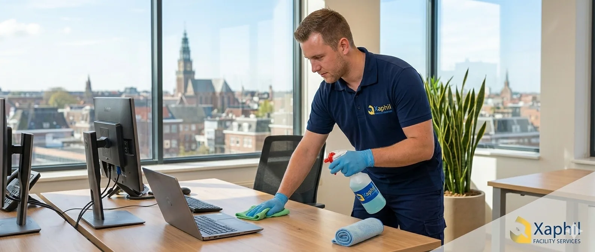

Specialistische en professionele schoonmaak — verfijnder gepresenteerd, met heldere iconen en sprekend beeld.

Voorbeeld van de nieuwe kaartstijl: lijnicoon in een goud/blauw badge, gouden accentlijn bij hover.
Opgeleid voor zelfs de meest gevoelige situaties — discreet en met zorg.
We luisteren en passen onze aanpak aan op uw situatie.
Duurzame, veilige middelen — veilig voor mens én milieu.